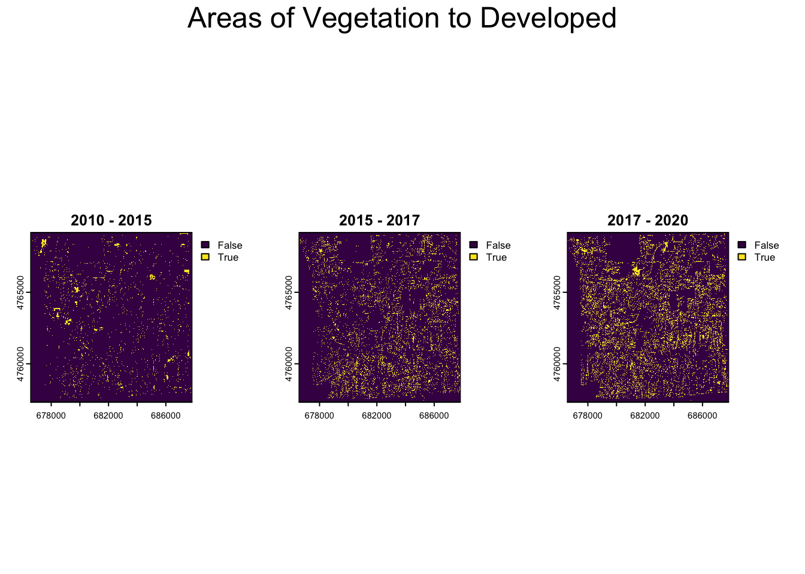
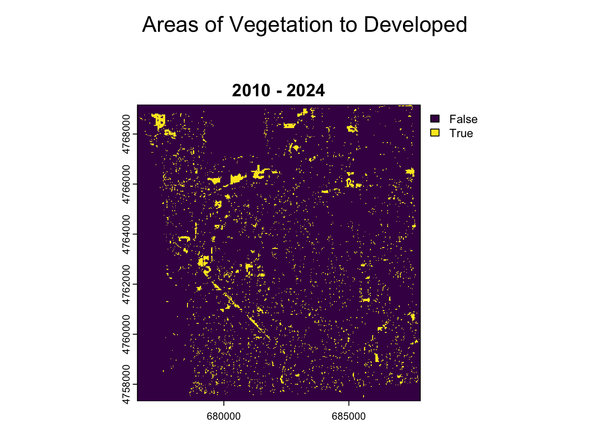
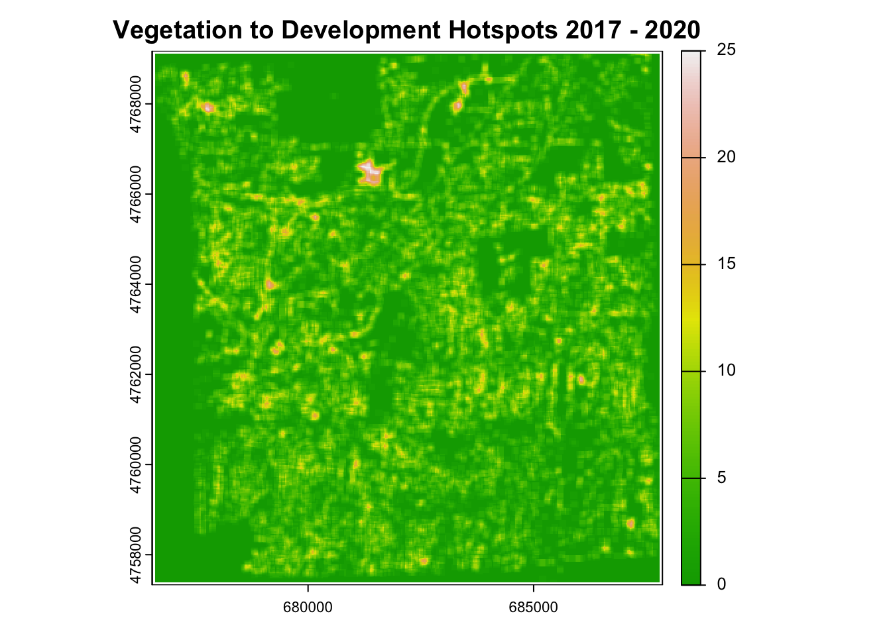
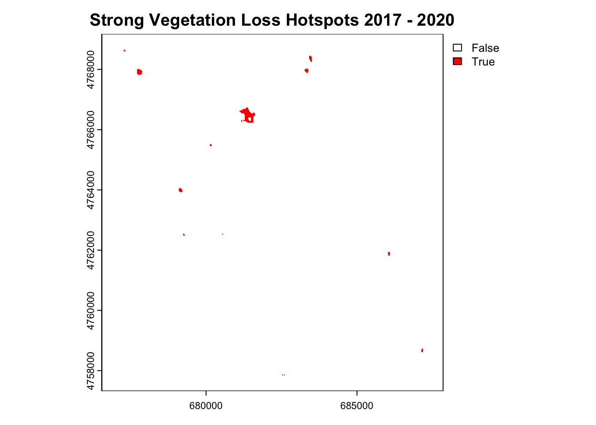

Code
library(terra)
library(sf)
library(ggplot2)
library(leaflet)
library(sp)
library(raster)
library(dbscan)
library(dplyr)
library(osmdata)
library(ggspatial)
library(prettymapr)Methods. This project looked at the land use land cover change in Amherst, New York. This project utilized ESRI ArcGIS Pro to perform a supervised remote sensing of both X meter sentinal and X meter orthophotos. Classifications were originally categorizes as X,X,X, and X.
Classification files were then analyzed using R programming to show temperal land change and also to identify areas of physical land change hotspots.
library(terra)
library(sf)
library(ggplot2)
library(leaflet)
library(sp)
library(raster)
library(dbscan)
library(dplyr)
library(osmdata)
library(ggspatial)
library(prettymapr)r10 <- rast("GEO653_documents/Amherst_2010.tif")
r15 <- rast("GEO653_documents/Amherst_2015.tif")
r17 <- rast("GEO653_documents/Amherst_2017.tif")
r20 <- rast("GEO653_documents/Amherst_2020.tif")
r24 <- rast("GEO653_documents/Amherst_2024.tif")
amherst <- vect("GEO653_documents/BB.shp")Reproject variables and clean up data
amherst <- project(amherst, crs(r17))
amherst_sf <- st_as_sf(amherst)
#crop boundaries
clip_raster <- function(r, boundary)
{mask (crop (r, boundary[2, ]), boundary)}
r10 <- clip_raster(r10, amherst)
r15 <- clip_raster(r15, amherst)
r17 <- clip_raster(r17, amherst)
r20 <- clip_raster(r20, amherst)
r24 <- clip_raster(r24, amherst)
rcl <- matrix(c(
10, 1,
20, 2,
30, 3,
60, 4
), ncol = 2, byrow = TRUE)
r10_reclass <- classify(r10, rcl)
r15_reclass <- classify(r15, rcl)
r17_reclass <- classify(r17, rcl)
r20_reclass <- classify(r20, rcl)
r24_reclass <- classify(r24, rcl)
r10_aligned <- r10_reclass
r15_aligned <- resample(r15_reclass, r10_reclass, method = "near")
r17_aligned <- resample(r17_reclass, r10_reclass, method = "near")
r20_aligned <- resample(r20_reclass, r10_reclass, method = "near")
r24_aligned <- resample(r24_reclass, r10_reclass, method = "near")
r10_aligned[r10_aligned == 255] <- NA
r15_aligned[r15_aligned == 255] <- NA
r17_aligned[r17_aligned == 255] <- NA
r20_aligned[r20_aligned == 255] <- NA
r24_aligned[r24_aligned == 255] <- NApar(mfrow = c(1, 3), oma = c(0, 0, 4, 0))
veg_to_dev_10_15 <- (r10_aligned %in% c(0,3)) & (r15_aligned %in% c(1,2))
plot(veg_to_dev_10_15, main = "2010 - 2015")
veg_to_dev_15_17 <- (r15_aligned %in% c(0,3)) & (r17_aligned %in% c(1,2))
plot(veg_to_dev_15_17, main = "2015 - 2017")
veg_to_dev_17_20 <- (r17_aligned %in% c(0,3)) & (r20_aligned %in% c(1,2))
plot(veg_to_dev_17_20, main = "2017 - 2020")
mtext("Areas of Vegetation to Developed",
outer = TRUE, cex = 1.5, line = 2)
par(mfrow = c(1, 1), oma = c(0, 0, 4, 0))
veg_to_dev_10_24 <- (r10_aligned %in% c(0,3)) & (r24_aligned %in% c(1,2))
plot(veg_to_dev_10_24, main = "2010 - 2024")
veg_to_dev_17_24 <- (r17_aligned %in% c(0,3)) & (r24_aligned %in% c(1,2))
#plot(veg_to_dev_17_24, main = "2017 - 2024")
veg_to_dev_20_24 <- (r20_aligned %in% c(0,3)) & (r24_aligned %in% c(1,2))
#plot(veg_to_dev_20_24, main = "2020 - 2024")
mtext("Areas of Vegetation to Developed",
outer = TRUE, cex = 1.5, line = 2)
moving_window <- matrix(1, 5, 5)veg_loss_hotspots_10_24 <- focal(veg_to_dev_10_24, w = moving_window, fun = sum, na.policy = "omit")
plot(veg_loss_hotspots_10_24, main = "Vegetation to Development Hotspots 2010 - 2024", col = terrain.colors(170))
strong_hotspots_10_24<- veg_loss_hotspots_10_24 > 15
plot(strong_hotspots_10_24, main = "Strong Vegetation Loss Hotspots 2010 - 2024", col = c("white", "red"))
n_hotspot_pixels_10_24 <- global(strong_hotspots_10_24, sum, na.rm = TRUE)
hotspot_area_m2_10_24 <- n_hotspot_pixels_10_24 * 900
print(paste("2010-2024 Total strong hotspot area (meters^2):", round(hotspot_area_m2_10_24, 2)))[1] "2010-2024 Total strong hotspot area (meters^2): 953100"#convert raster hotspots to polygons
hotspot_polygons <- as.polygons(strong_hotspots_10_24, dissolve = FALSE)
hotspot_polygons <- hotspot_polygons[hotspot_polygons[[1]] == 1, ]
#find centroids and coords to polygons
centroids <- centroids(hotspot_polygons)
coords <- crds(centroids)
#find clustering of centroids
eps_value <- 50 # adjust as needed
clust <- dbscan(coords, eps = eps_value, minPts = 1)
centroids$cluster <- clust$cluster
attr_df <- as.data.frame(centroids)
#make grouped centroids into one single centroid by average (x,y)
centroids_df <- cbind(attr_df, x = coords[,1], y = coords[,2])
cluster_summary <- centroids_df %>%
group_by(cluster) %>%
summarize(
mean_x = mean(x),
mean_y = mean(y),
count = n()
)
cluster_centroids <- vect(cluster_summary[, c("mean_x", "mean_y")],
geom = c("mean_x", "mean_y"), crs = crs(centroids))
#areas of hotspots
plot(cluster_centroids)
# --------------------------------------
# 1. Convert to sf and reproject to WGS84
# --------------------------------------
# Assuming clustered_centroids is a SpatVector from terra
clustered_centroids_sf <- st_as_sf(cluster_centroids)
clustered_centroids_wgs84 <- st_transform(clustered_centroids_sf, 4326)
# --------------------------------------
# 2. Buffer each centroid (e.g., ~25m buffer in degrees)
# --------------------------------------
buffer_radius <- 0.00025 # ~25 meters in lat/lon degrees
centroid_buffers <- st_buffer(clustered_centroids_wgs84, dist = buffer_radius)
# --------------------------------------
# 3. Query OSM for landuse features (one request for all)
# --------------------------------------
# Get bounding box of all buffers
global_bbox <- st_bbox(centroid_buffers)
# Set OSM key to landuse
osm_key <- "landuse"
# Build and send query
query <- opq(bbox = global_bbox) %>%
add_osm_feature(key = osm_key)
osm_data <- tryCatch(
osmdata_sf(query),
error = function(e) NULL
)
# --------------------------------------
# 4. Intersect returned OSM features with centroid buffers
# --------------------------------------
if (!is.null(osm_data) && nrow(osm_data$osm_polygons) > 0) {
osm_landuse <- osm_data$osm_polygons
overlaps <- st_join(centroid_buffers, osm_landuse, join = st_intersects, left = FALSE)
if (nrow(overlaps) > 0) {
cat("Matched landuse types:\n")
print(table(overlaps$landuse))
plot(st_geometry(centroid_buffers), col = NA, border = "gray", main = "Land Use Around Clustered Centroids")
plot(st_geometry(osm_landuse), col = "lightgreen", border = "green", add = TRUE)
plot(st_geometry(clustered_centroids_wgs84), col = "black", pch = 19, add = TRUE)
} else {
cat("no landuse polygons overlapped with point buffer.")
}
} else {
cat("no landuse data returned from OSM.")
}Matched landuse types:
brownfield construction meadow residential
1 3 1 13 
#buffer the centroids to find the various land use around the area
centroid_buffers$id <- seq_len(nrow(centroid_buffers))
landuse_matches <- st_join(centroid_buffers, osm_landuse, join = st_intersects, left = FALSE)
#find the most dominant land use and assign to the centroid
dominant_landuse <- landuse_matches %>%
st_drop_geometry() %>%
group_by(id, landuse) %>%
summarize(count = n(), .groups = "drop") %>%
group_by(id) %>%
slice_max(order_by = count, n = 1, with_ties = FALSE)
centroid_with_landuse <- left_join(centroid_buffers, dominant_landuse, by = "id")
centroid_points <- st_centroid(centroid_with_landuse)Warning: st_centroid assumes attributes are constant over geometriescentroid_points <- centroid_points %>%
mutate(
landuse = ifelse(is.na(landuse), "not found", landuse),
count = 1)
ggplot() +
annotation_map_tile(type = "osm") +
geom_sf(data = centroid_points, aes(color = landuse), size = 3, shape = 19) +
scale_color_viridis_d(option = "plasma", name = "Dominant Landuse") +
theme_minimal() +
labs(
title = "Centroids Colored by Dominant Landuse"
) +
theme(legend.position = "right")Zoom: 11
#2010 - 2024 Hotspot
strong_hotspots_proj_10_24 <- project(strong_hotspots_10_24, "EPSG:3857")
#Convert True and False to 1 and 0
strong_hotspots_proj_10_24_numeric <- as.numeric(strong_hotspots_proj_10_24)
strong_hotspots_proj_10_24_numeric_no_zeros <- mask(strong_hotspots_proj_10_24_numeric, strong_hotspots_proj_10_24_numeric, maskvalues = c(0, NA))
#Color the hotspots red and make the non hotspot areas transparent
pal_hotspots <- colorNumeric(
palette = c("transparent", "red"),
domain = c(0, 1)
)
#Plot on a leafet map with osm to identify land use of hotspot areas
leaflet() %>%
addProviderTiles(providers$OpenStreetMap) %>%
addRasterImage(
strong_hotspots_proj_10_24_numeric_no_zeros,
colors = pal_hotspots,
opacity = 0.50, # Show hotspots with full opacity
project = FALSE
) %>%
addLegend(
position = "bottomright",
pal = pal_hotspots,
values = c(0, 1),
title = "Vegetation Loss Hotspots (2010-2024)",
labels = c("No Hotspot", "Hotspot")
)